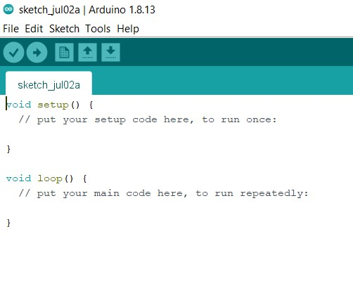

Have you ever broken your electronic toys or any electronic item, to know how it works or what components are inside the device? Have you ever thought of making your own gadgets like some remote control car, line following robot, simple led system or any sensor based gadgets.
Today, I am going to introduce you to a microcontroller based board that will make your ideas real. The name of the board is ‘Arduino UNO’. Some of you might be thinking, what the microcontroller is? In the simplest words, a microcontroller is a chip with CPU and some fixed amount of RAM, ROM and other peripherals embedded in it. You might have been thinking how this board gonna help us in making gadgets, So don’t worry I will be clearing all doubts here, just stick with me.
Arduino is an open source electronics platform which provides easy to use hardware and software which can be used for making various projects, gadgets and also for prototyping etc. Arduino makes different types of boards to serve different specific purposes and the boards can take different inputs and turn it into the output. We can do many stuffs using any of these boards but today we are going to learn about a particular board i.e. “Arduino UNO”. So let's jump into the details of the board and learn how we can use it to make our desired gadget.
Uno is basically a microcontroller board which uses ATmega328 as its main microcontroller chip. Below is the diagram of arduino with its parts labeled. Give a look at each part and read the description below for knowing much about it.
Note :- i will be using processor word in place of microcontroller so don’t get confused.Note :- The main processor communicates using serial communication. Serial communication is the process of communication where data is sent over a channel one bit at a time. So the board needs ATmega16U2 for communicating via USB.
Now you know almost all the components present on the board. So lets move forward to learn about the working of the board but before that we will take a quick look at the few specifications of the board.
Above are the few specifications of the board. As you know that the main processor of the board is ATmega328P and the board operates on the 5 volts. The board is a digital board which means it sends output digitally i.e. in 0 and 1 (0=0volts and 1=5volts).
Board works according to your instructions. You can tell your board what to do by sending a set of instructions to the microcontroller on the board. To do so you use The Arduino programming language and the Arduino software(IDE).
This board works on digital signals; it can't send/transmit analog signals. For those who don’t know what digital signal and analog signal is :- Digital signals are electrical signals which can only be in two states i.e. 0 or 1 / on or off / high or low. Analog signals are continuous electrical signals which range from 0 to 1024. But we can use digital signals as analog signals by PWM( pulse width modulation ). Pulse width modulation is a method of getting analog results by digital means. In this method we chop the digital signals effectively with respect to time and get the desired output. For example :- Suppose a motor runs at a full speed on 5v supply and we have a 5v supply which. But we want it to run at half of its speed. We will use PWM for this, motor does not start to run at the full speed as soon as we power it, it takes some time to get it full speed so what we will do we'll give it 5v supply until it get to rotate at half of its speed and then we will shift the supply to 0v and again we will give it 5v after a calculated time interval so that it maintain its speed at half of the max speed and this will result in continuous movement of motor at half of its speed. This is an important concept so keep this in mind we will know how to use it when we enter the programming part of the board. So let us learn how we can program the board.
By programming the board we can send our instructions to the board. So in this section we will learn about ‘Arduino IDE’ and take the overview of the ‘Arduino programming language’.
Arduino IDE is a cross platform application (for windows, macOS, linux) that is written in function from C and C++. Basically it's an application for programming arduino compatible boards.
We can program the arduino using some different softwares also but the arduino IDE is best and easy to use and it is also distributed by the arduino itself. So i will recommend you to use the desktop IDE but you can also program the arduino using . For downloading the arduino IDE for your system to work click here. https://www.arduino.cc/en/main/software
After extracting the file go to the folder where you extracted it and double click on the arduino.exe file to open it. After opening the IDE you will see this screen on your desktop or laptop.
In the above picture just below the menu bar there is round shaped icon with a tick mark on it i.e. the icon for compile By clicking on that icon you can compile your code(Compiling means converting your source code into machine code cause the machine only understands binary language). Just beside the compile icon arrow marked icon is present this icon is for uploading the code to the board. After successfully compiling your code you should upload your code to the board using the ‘USB cable’ one end connected to your laptop and the other end to your board. This was about IDE but what should we write in our code we will take some overview in the upcoming section.
In the previous section we learned how to use IDE to upload the code to the board. In this section we will get an overview of what we should write in the code and how we can learn coding it. According to me coding is a never ending learning process there is always a chance to write something new it has endless possibilities.So no one can teach you how to code you have to learn it by doing yourself. Coding is just a language in which you can communicate with machines and a good communication requires two things: a common language and thoughts which you want to share. So get your thoughts on what you want to do with your board, learn the basics of coding search on google how u can achieve it and don’t stop until it's done. Google is the most important tool while learning so use it for your every query after giving a thought on how you can solve it.
Let’s come to the overview, before getting into the coding part, I wanna tell you that arduino uses a programming language which similar to C programming language. If you don’t know C programming language then don’t try to learn it completely at once and then start programming arduino, just learn some basics and syntax of the following :- variable, functions, loops, arrays. After reading them go to the arduino reference page and learn about the arduino functions, variable and library. But i will suggest you to learn it by starting with the small projects such as blinking led etc. by searching tutorials on the internet and try to understand each line of code. Build more and more and ultimately you will learn how to code on your own. I will explain something to you that will make your further learning easy.
On the first page of the IDE you must had seen something written like this, if you haven’t then take another look  Some of you who know nothing about programming will not be getting anything, let me explain it to you. These are nothing but just two functions void setup() and void loop(). Now you will be thinking what a function is :- function is a block of code which performs a particular task. void is the return type and setup is the name of the function; the pair of parentheses() is like a sign that it is a function and the opening and closing curly braces mark the starting and ending of the function respectively.And in between those curly braces we write our block of code. Void is the return type and setup is the name of the function; the pair of parentheses() is like a sign that it is a function and the opening and closing curly braces mark the starting and ending of the function respectively and in between those curly braces we write our block of code.
So all the arduino programs have at least two functions i.e. void setup() and void loop(). In the setup() function we set up our pins that which pin will be used for the sending output and which one is for taking inputs. It runs only for one time as the program starts running. You can set your pin mode using pinMode() function. For example for setting up the pin 13 for the output you will write:-
void setup(){
pinMode(13,OUTPUT);
}
pinMode is also a function but it is a prewritten(inBuilt) function, it takes a pin and its mode as its argument. Here pin is 13 and its mode is OUTPUT.
Note :- We must use semicolon after each line otherwise the program will not compile and throw an error(semicolon represents the end of the line).void loop() is a function where we write the things we want to do. It runs infinitely till the board is powered. For example :- For blinking of led using pin 13.
void loop(){
digitalWrite(13,HIGH);
delay(1000);
digitalWrite(13,LOW);
delay(1000);
}
Above program will repeat itself after it ends so the led will blink till the board is powered.Let us understand this piece of code, In the loop() function we have used two other functions for achieving our desired outcome, first one is digitalWrite() and second is delay(). digitalWrite() is also a inBuilt function which used for writing the high or low to the pins which are set for output using pinMode function(we have setup the pinmode for 13 in the first example), writing HIGH to pin means providing 5v supply and writing low to the pin means providing 0 volt supply. Practically it means that in the case of HIGH the light will glow and in the case of LOW the light will be off. So you can see digitalWrite also takes two arguments the first is ‘pin’ and second is ‘output state’ i.e HIGH or LOW. There is one more function in the above program i.e. delay() function. It’s work is to freeze the board for few seconds. Here freezing means to stop the board from executing the next command for the inputted time interval. It takes only one argument which is the no. of milliseconds(1sec=1000ms). In the above code we have provided the value of the 1000 that means the led will remain glowing for 1sec and after that it will get turn off and then it will remain turn off for 1sec and this whole process will repeat till the board is powered. So you got the code for your starter project let me merge them for you :-
void setup(){
pinMode(13,OUTPUT);
}
void loop(){
digitalWrite(13,HIGH);
delay(1000);
digitalWrite(13,LOW);
delay(1000);
}
Use this code and get you started in the hardware world. Before moving towards the ending note let’s summarize how can you make your first project :-
For making your first you need a Arduino UNO board, led, jumper wires, resistor, and an IDE. After all this you need to write your program or the above program in the IDE and compile after successful compilation of the code you must connect your board to your laptop/desktop via USB and then click on the upload icon after the successful upload. Now connect the led to gnd and pin 13 to complete the circuit using the jumper wires.After completing the circuit power the board using USB cable or the external power supply via power plug or using the Vin pin(recommended using via usb). And you did it HURRAY!. Enjoy watching the led blinking. You can also try to blink the led in different fashion for example by increasing the time interval of blinking etc.
Learning about how to use hardwares to make gadgets sounds cool and it will also provide an edge in your career. It will make you self-sufficient and the coming era is “Era of Robots” and in that, it will be a great skill to achieve. So get yourself started as soon as possible and make interesting gadgets that will make our life easier.
Thank you. Learning never ends so keep learning :)